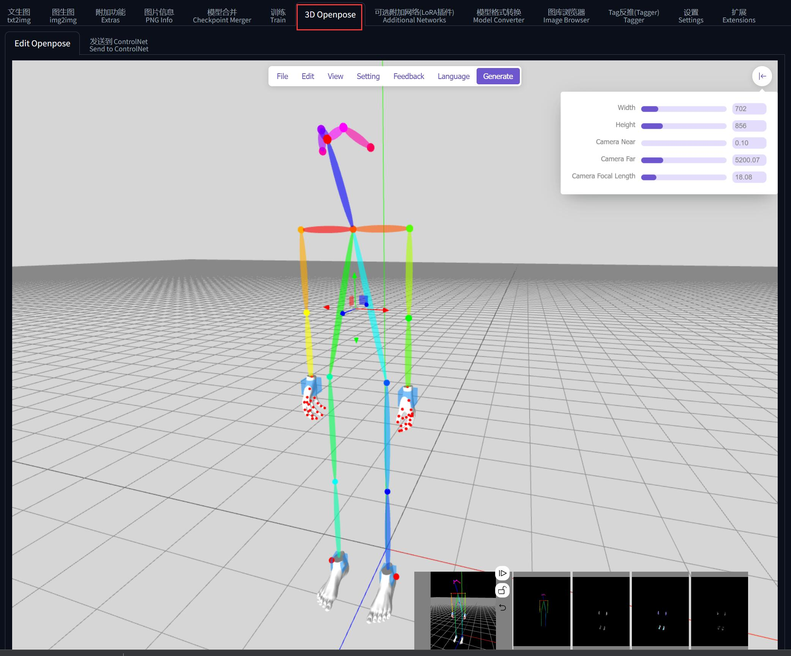
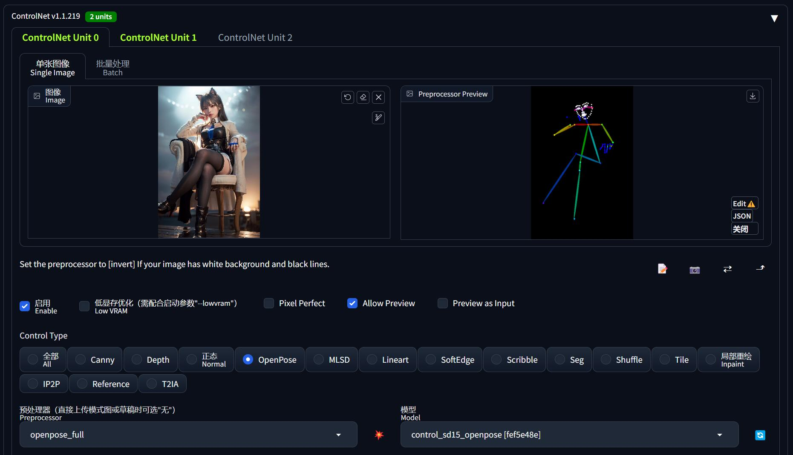

0x00 导航
鉴于 AI 绘画的知识点较多，限于篇幅及便于分类组织，我会以一个系列文章的形式记录：
- 系列 01：《AI 绘画原理与工具》
- 系列 02：《AI 绘画模型扫盲》
- 系列 03：《AI 绘画模型推荐》
- 系列 04：《文生图：不会念咒的炼丹师不是一个好画家》
- 系列 05：《图生图：突破次元圈限制》
- 系列 06：《高清修复：轻松拥有 24K 钛合金画质》
- 系列 07：《提示词进阶：渐变|交替|混合》
- 系列 08：《LoRA 专题：五大应用场景》
- 系列 09：《LoRA 训练：不会炼丹的魔法师不是一个好画家》
- 系列 10：《ControlNet: 姿态控制》
- 系列 11：《ControlNet 进阶：打造炫酷的艺术字和二维码》
- 系列 12：《AI 动画初探：整个宇宙为你而闪烁》
你当前正在阅读的是系列 10：《ControlNet: 姿态控制》
0x10 前言
在 ControlNet 出现之前，基于扩散模型的 AI 绘画是极难控制的，因为扩散的过程充满了随机性。
如果只是纯粹自娱自乐，这种随机性并不会带来多大困扰；但在产业化上应用就难以普及了，因为随机性的直接导致的就是缺乏稳定性，每次出图都要依赖不断抽卡，极大影响了工作效率。
然而 ControlNet 赋予了我们自由组织画面内容的能力：固定构图、定义姿势、描绘轮廓，单凭线稿就能生成一张丰满精致的插画，甚至有人用它画出了二维码 … ControlNet 的出现使得对 AI 绘画的完全控制成为现实。
0x20 基本原理
ControlNet 亦即控制网络，它本质上是 SD 的一个扩展插件。在作用原理上，它和 LoRA 是有许多相似的地方的，定位都是对大模型做微调的额外网络。
控制网络的核心作用是基于一些额外输入给它的信息、来给扩散模型的生成内容提供明确的指引。
举个例子，譬如在 Prompt 中输入 “跳舞” 的提示词，AI 可以画出无数种跳舞的姿势，在过去，我们只能通过图生图让 AI 仅可能地接近我们期望的那个姿势。但是 ControlNet 出现之后，我们可以通过给它输入一张纯粹记录了某种特定姿势（由 openpose 识别出来的、以点线组成的人体骨架图）信息的图片来画出指定的姿势，实现精准控制。

在我刚刚学 ControlNet、得知可以调用 openpose 的时候，确实有种殊途同归的感概 —— 终于又回到了我熟悉的领域： 曾经被我用来研究游戏视觉 AI 辅助的 openpose，没想到竟然也可以在 AI 绘画中也占据半壁江山 …
0x30 ControlNet 安装
0x31 插件安装
核心只需要安装一个插件 sd-webui-controlnet：
重启界面后可以看到新增的这个选区即安装完成：
另外为了后续方便编辑自定义的 pose，这里再安装一个 sd-webui-3d-open-pose-editor 插件（使用方法见官方文档）：

0x32 模型安装
ControlNet v1.1 （目前最新版）的常用模型都是在 huggingface 里面下载：
每个模型由两种文件组成：*.pth 和 *.yaml。
安装某一个模型的时候，两种格式都需要下载回来、并放到 %{NovelAI}/models/ControlNet/ 目录下即可使用。
0x33 预处理器安装
预处理器一般是在使用 ControlNet 的时候按需自动下载的，但是由于大陆网络原因，可能下载不了，此时界面会报错：
这里提供一个通用的解决方法。先在 NovelAI 的 dos 终端中找到异常信息：
核心失败原因解读一下：
Downloading:
"https://huggingface.co/lllyasviel/Annotators/resolve/main/hand_pose_model.pth"
to
R:\AIDraw\novelai-webui-aki-v3\extensions\sd-webui-controlnet\annotator\downloads\openpose\hand_pose_model.pth主要就是说：下载 hand_pose_model.pth 到 %{NovelAI}/extensions/sd-webui-controlnet/annotator/downloads/openpose/ 目录失败。
根本原因就是 dos 终端没科学上网导致下载不到文件，可以手动从报错的链接 https://huggingface.co/lllyasviel/Annotators/resolve/main/hand_pose_model.pth 下载文件到指定目录（每个预处理器的目录可能不一样）。
类似地，其他预处理器也会有此问题，届时参考这个方法举一反三地处理即可。
下面也提供了常用的预处理器的下载链接和安装路径，亦可按需使用
0x40 常用 ControlNet 模型推荐
在 ControlNet v1.1 中，它能控制的方向已经远远不止人体姿态这一种，而是多达 14 个不同方向的控制，每一个方向对应一个模型。
为了方便选择困难症的同学，这里推荐最常用的几个模型（当然如果你有时间也可以把 14 个模型全部下载）：
| 名称 | openpose |
|---|---|
| 功能 | 人体姿态控制、脸部特征控制（表情控制）、手部特征控制（解决画手问题） |
| 模型下载 | control_v11p_sd15_openpose.pth, control_v11p_sd15_openpose.yaml |
| 模型位置 | %{NovelAI}/models/ControlNet/ |
| 预处理器 | body_pose_model.pth, hand_pose_model.pth, facenet.pth |
| 预处理器 放置位置 |
%{NovelAI}/extensions/sd-webui-controlnet/annotator/downloads/openpose/ |

| 名称 | depth |
|---|---|
| 功能 | 描绘富有空间感的多层次场景（景深控制）、人物肢体交叠（人体透视） |
| 模型下载 | control_v11f1p_sd15_depth.pth, control_v11f1p_sd15_depth.yaml |
| 模型位置 | %{NovelAI}/models/ControlNet/ |
| 预处理器1 | dpt_hybrid-midas-501f0c75.pt |
| 预处理器1 放置位置 |
%{NovelAI}/extensions/sd-webui-controlnet/annotator/downloads/midas/ |
| 预处理器2 | res101.pt, latest_net_G.pth |
| 预处理器2 放置位置 |
%{NovelAI}/extensions/sd-webui-controlnet/annotator/downloads/leres/ |
| 预处理器3 | ZoeD_M12_N.pt |
| 预处理器3 放置位置 |
%{NovelAI}/extensions/sd-webui-controlnet/annotator/downloads/zoedepth/ |
| 名称 | canny |
|---|---|
| 功能 | 勾勒图像的边沿特征（还原图像外形特征）、且会保留内部细节，可用于线稿上色。 |
| 模型下载 | control_v11p_sd15_canny.pth, control_v11p_sd15_canny.yaml |
| 模型位置 | %{NovelAI}/models/ControlNet/ |
| 预处理器 | 无 |
| 名称 | hed / softEdge |
|---|---|
| 功能 | 柔和边沿，和 canny 功能类似，但是边沿会更模糊，只保留轮廓特征。 |
| 模型下载 | control_v11p_sd15_softedge.pth, control_v11p_sd15_softedge.yaml |
| 模型位置 | %{NovelAI}/models/ControlNet/ |
| 预处理器 | 无 |

| 名称 | scribble |
|---|---|
| 功能 | 比 softEdge 更自由奔放的描摹（涂鸦乱画、灵魂画手） |
| 模型下载 | control_v11p_sd15_scribble.pth, control_v11p_sd15_scribble.yaml |
| 模型位置 | %{NovelAI}/models/ControlNet/ |
| 预处理器1 | table5_pidinet.pth |
| 预处理器1 放置位置 |
%{NovelAI}/extensions/sd-webui-controlnet/annotator/downloads/pidinet/ |
| 预处理器2 | ControlNetHED.pth |
| 预处理器2 放置位置 |
%{NovelAI}/extensions/sd-webui-controlnet/annotator/downloads/hed/ |
| 名称 | tile |
|---|---|
| 功能 | 搭配 MultiDiffusion 区块化放大图片，详见《高清修复：轻松拥有 24K 钛合金画质》 |
| 模型下载 | control_v11f1e_sd15_tile.pth, control_v11f1e_sd15_tile.yaml |
| 模型位置 | %{NovelAI}/models/ControlNet/ |
| 预处理器 | 无 |
0x50 基本使用
可以说，ControlNet 最困难的部分就是安装。使用它其实非常简单。
例如我现在希望让 AI 画出「刻晴在海边弹尤克里里」的画面，在过去我们的做法就是：
- 找一个 刻晴 的角色 LoRA
- 添加提示词
sunset, beach, stand in sea, play ukulele, - 无限重绘直到得到自己满意的图
那我们就可能得到大量的 “刻晴拿着琴身”、“刻晴掰断琴头”、“刻晴抱着琴不弹” 等一堆无法满足需求的画面。最后万不得已挑了一张稍微能接受的 “刻晴抱着琴不弹”，就完事了：
但现在有了 ControlNet，我们就可以一步到位、不需要碰运气了。
在前面的基础上，我们再从网上找一张自己满意的「弹尤克里里」的图片，要是真的找不到，哪怕自拍一张拿着扫帚的照片也是可以的：
使用 3D Openpose 捏动作
还记得前面装了一个 sd-webui-3d-open-pose-editor 插件吧？
其实也可以用它去把自己想要的姿势捏出来：
不过捏的时候虽然是 3D，实际上发送到 ControlNet 之后会投影到 2D 平面上， z 轴的坐标还是被抹掉了。
然后把这个照片导入 ControlNet （导入前需要裁剪宽高比例和出图比例一致）：
- 勾选启用
- 选择 Control Type 为 openpose， 然后预处理器和模型都会自动选中 openpose 相关的选项（需要提前安装模型）
- openpose 的预处理器有五种类型，按需选择即可：
- openpose: 仅识别人体姿态骨架
- openpose_face: 识别人体姿态骨架 + 脸部特征
- openpose_faceonly: 仅识别脸部特征
- openpose_full: 识别人体姿态骨架 + 脸部特征 + 手部特征
- openpose_hand: 识别人体姿态骨架 + 手部特征
- 点击预处理器旁边的「爆炸」按钮，就会识别中图片中的人体，生成人体姿态的预览图
当点击「生成」图片按钮后，ControlNet 就会把 人体姿态信息 + 人体在图像中的相对位置 都输入到 AI 绘图。
由于 ControlNet 的 openpose 不会识别人体姿态以外的任何信息，故参考图中的人物拿着什么、AI 是不知道的，因此我们需要在提示词中进一步打辅助：告诉 AI “刻晴正在用这个姿势 play ukulele”， AI 就会 get 到手上空出来的位置是拿着尤克里里了。
0x60 多重控制网
不难注意到，ControlNet 其实最多支持同时使用 3 个模型，当使用 2 个以上的 ControlNet 时，称之为多重控制网。
那什么场景下会用到多重控制网呢？一个典型的例子就是人体遮挡透视。
例如我现在希望画一张「刻晴双手遮住眼睛」的图像，虽然从网上找到了我想要的动作，但是 openpose 只能识别出人体各个部位的平面位置、却不能很好的反映出它们之间的透视信息（亦可理解为景深）：
其实熟知视觉 AI 的同学就知道，openpose 提供的关键点 landmarks 只有 2D 的，z 轴信息被弱化了，导致不能呈现透视效果。反之如果 ControlNet 未来能引入像 mediapipe 之类的框架，就能提供 3D 的 landmarks，届时不需要多重控制网也能解决透视问题。
故而只使用 openpose 一个控制网，画出来的效果可能就是「刻晴双手抱在脑后」了：
解决的办法是引入另一张控制网打配合。
在这个场景下，因为透视/景深信息缺失才导致出图不准，因此可以引入擅长做这个事情的 depth 控制网：
- 保持 openpose 配置不变，切换到第二张控制网
- 选择控制网类型为 depth（需要提前安装模型）
- 导入和 openpose 一样的参考图，点击预处理器旁边的「爆炸」按钮，生成透视信息。在透视图中可以明显看到人物的手在头部前面，而不是脑后
- 适当减少 depth 控制网的权重，避免过多约束画面内容，我们的目的只需要让 AI 知道“手在眼前”的信息就够了
- 提示词可以添加
cover eyes with hands打配合
看一下出图效果，这次就能够正确画出我们期望的结果：
建议使用多重控制网时，所选的多个 ControlNet 在能力上应该是互补的，否则徒增显存却不会提升多大的出图效果、甚至还有可能变差。
如果你的显存确实不够支撑多张控制网，不妨勾选「低显存优化」功能试试，当然出图效率会降低就是了
0x70 高清放大
在系列的《高清修复：轻松拥有 24K 钛合金画质》中我们提到的 MultiDiffusion 可以通过区块化放大图片，而有一定放大经验的同学都应该知道，在分片重绘高清图片的时候，极可能会导致多人的情况，这因为模型大多都是用比较低的分辨率去训练的：
而我们在上面推荐的 ControlNet Tile 模型，其实就是为了解决这种情况、和 MultiDiffusion 打配合使用的。
在 MultiDiffusion 把图片拆分成一个个小块的时候，ControlNet Tile 会去主动识别每一个小块的内容（类似图片反推提示词），如果识别出来的小块内容和整张图的全局提示词不匹配，ControlNet Tile 就会减少提示词对这一小块的影响。总而言之，ControlNet Tile 就是在用这种方式维持整体图像的内容在大体上不变：
使用方法也很简单：
- 参考《高清修复》的用法，正常启用 Tiled Diffusion 和 Tiled VAE 放大，我这里选择了 6 倍
- 把生成后未放大的图片拖进 ControlNet 里面：
- Control Type 选择 Tile
- 预处理器选择默认的 tile_resample
- Control Weight 可以选择大一些，建议在
1 - 1.3之间
- 启用 ControlNet，然后生成图片即可
需要注意的是，在 Tiled Diffusion 下有一个选项
Move ControlNet tensor to CPU，如果显存不够可以勾选，毕竟 ControlNet 也是吃显存的。但是出图会慢一些。